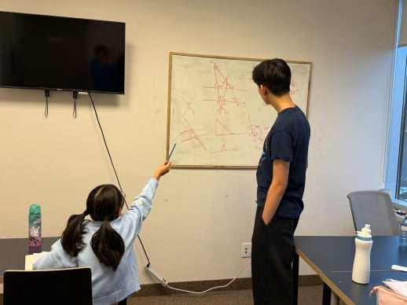
Peer Tutoring Support
We help students succeed in regular school math through free tutoring!
Get started →∫coastcoast (curiosity + friends) dx = mathtogether.ca
United by Numbers, Inspired by Learning!
We are a student-led community making contest math feel collaborative, generous, and alive. Explore lessons, livestreams, camps, charity contests, and peer support built by students who love solving hard problems together.
Sign up now → Watch on YouTube
homework panic becomes aha moments


September 5, 2026 · Markham
102 student registrations$3,197 raised for SickKids
On September 5, 2026, WePioneer hosted another successful Charity Math Competition in support of SickKids Foundation.
About
Founded by math enthusiasts, our club aims to make math fun and accessible for everyone. We believe that numbers can be exciting and engaging, and we're here to prove it!
Our leadership team is a mix of seasoned advisors and enthusiastic students, all dedicated to fostering a love for mathematics. Check out our bios to see who's behind the magic!
With a mission to inspire and help, we host events that challenge the norm and bring people together. Join us and be part of something extraordinary!
Our programs
Programs that make math meaningful, fun, and community-driven!

We help students succeed in regular school math through free tutoring!
Get started →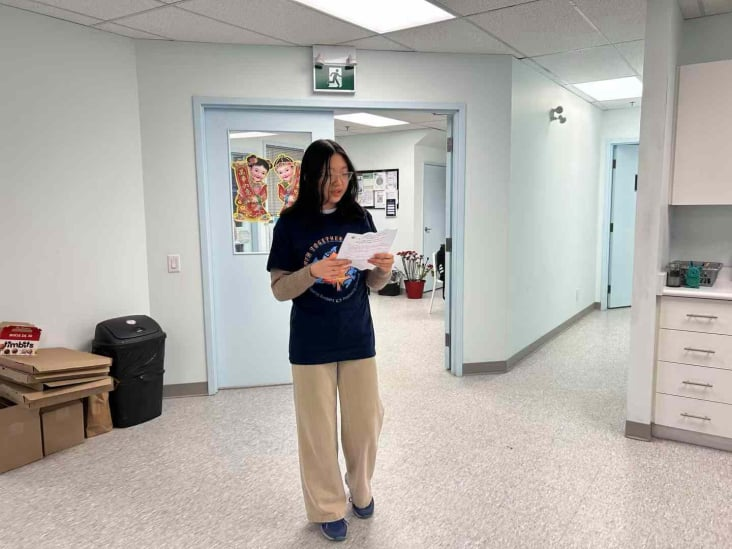
Challenging competitions that test your skills and boost your confidence.
Learn more →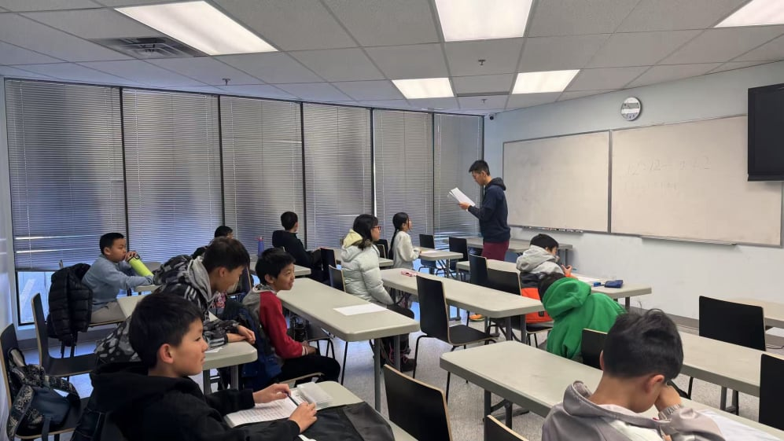
We host fun, creative math events that give back to the community!
Learn more →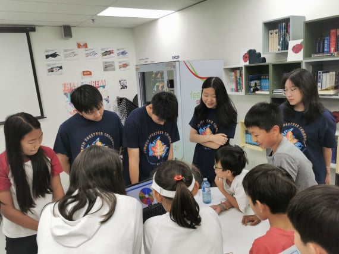
Join our exciting summer camp filled with puzzles, games, and learning!
Learn more →Learn from professional and passionate speakers through our math webinars!
Learn more →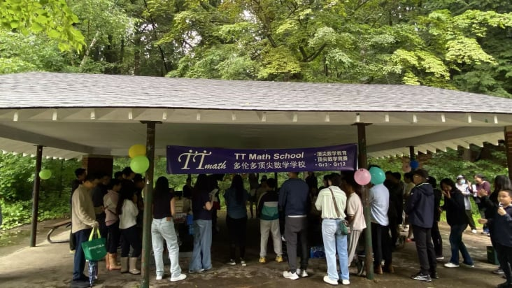
We offer meaningful volunteer roles for students who want to make a difference!
Get started →Livestream
Are you passionate about math? Want to test your problem-solving skills in real-time? Math Together Canada invites you to our Math Challenge — learning problem-solving strategies through interactive discussions. Big math energy on our YouTube channel!
Latest stories
September 5, 2026 · Markham
On September 5, 2026, WePioneer hosted another successful Charity Math Competition in support of SickKids Foundation.
This year, we welcomed 102 student registrations for a day of challenging math, learning, and community spirit. Students of different ages and experience levels came together to test their problem-solving skills while supporting a meaningful cause.
Thanks to the generosity of our participants, families, volunteers, and sponsors, the event raised an incredible $3,197 for SickKids, with additional donations still being counted. Over the past four years, WePioneer's student-led charity initiatives have raised more than $10,000.
We sincerely thank everyone who participated, volunteered, donated, and supported this event. Together, we showed that learning and kindness can go hand in hand.
We look forward to continuing this tradition and making an even greater impact next year. See you in 2027!
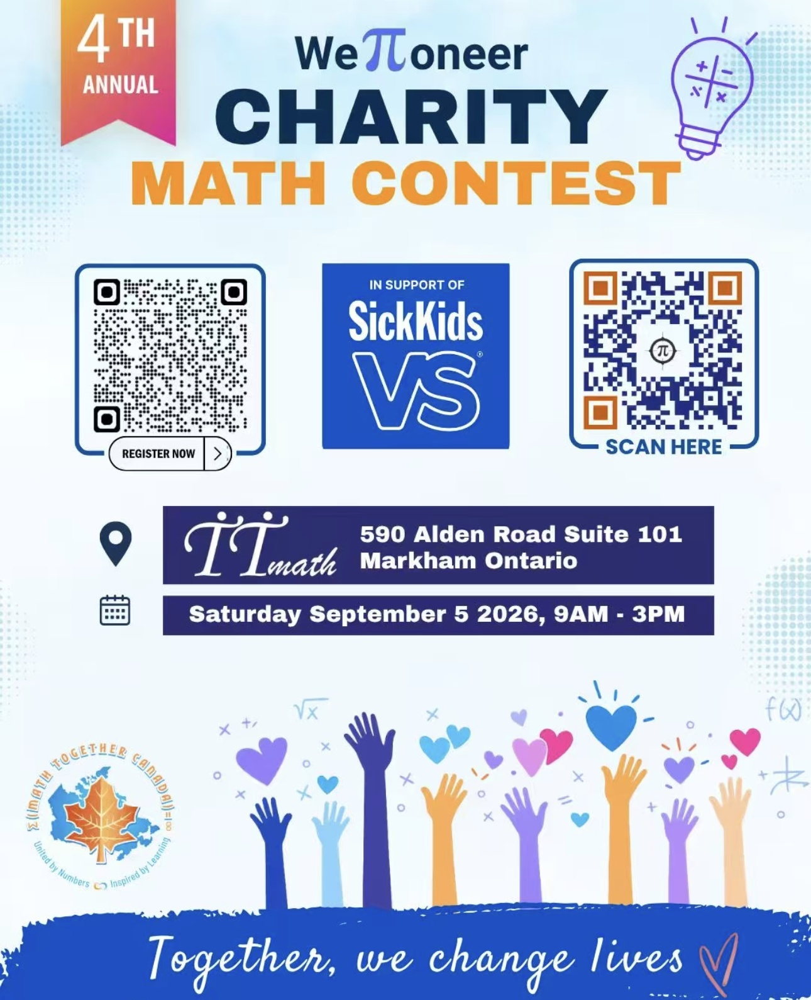
September 5, 2026 · Markham
Saturday, September 5, 2026, 9:00 AM to 3:00 PM at TTMath, 590 Alden Road, Unit 101, Markham — a day of problem-solving in support of SickKids Hospital. Watch the video →
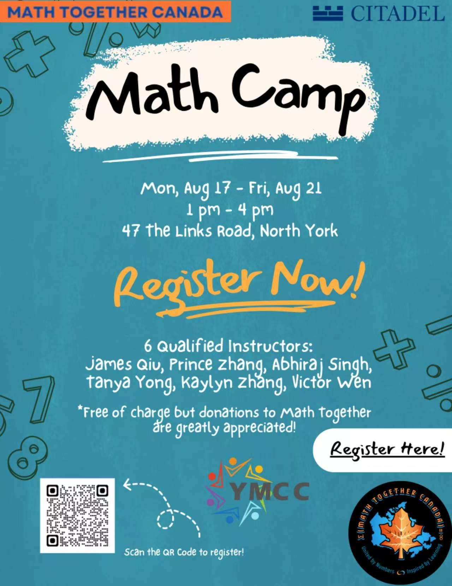
August 17–21, 2026 · North York
Our summer math camp is back. Five afternoons of contest-style problem solving, puzzles, and group discussion — open to students who are curious about math, whatever their contest experience.
Dates: Monday, August 17 to Friday, August 21, 2026, 1:00 PM to 4:00 PM each day.
Location: 47 The Links Road, North York, hosted with YMCC.
Instructors: six qualified instructors — James Qiu, Prince Zhang, Abhiraj Singh, Tanya Yong, Kaylyn Zhang, and Victor Wen.
The camp is free of charge, but donations to Math Together are greatly appreciated and go straight back into running events like this one. Spots are limited, so register early.
December 2025 · Oakville
During the winter break in December 2025, four MTC members hosted an AMC 8 Training Camp in the Oakville community. The camp aimed to introduce contest-style math and help students build confidence and speed in solving challenging problems.
The participants, most having limited contest experience, showed clear improvement in all four subjects (combinatorics, algebra, geometry, and number theory). Through our carefully-created practice problems, the students learned problem-solving approaches not taught at school. The classroom had become a collaborative and energetic learning space, with each student participating in ample discussion. The MTC organizers again showed their teaching and leadership skills and reinforced our mission to bring accessible and fun math to our communities.
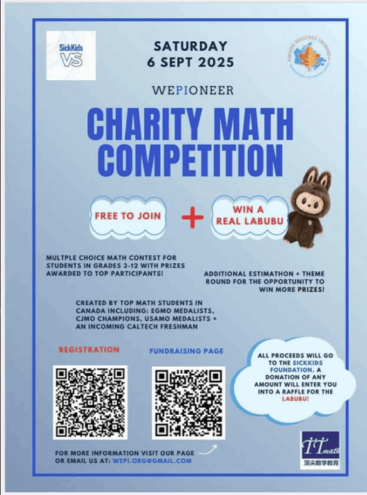
September 6, 2025
Get ready to celebrate another year of brain-teasing challenges and meaningful giving! On September 6th, 2025, we hosted our Charity Math Competition, and once again, the event was filled with excitement, learning, and community spirit — all in support of SickKids Hospital.
This year, we were thrilled to welcome 102 participants who took on a series of fun yet challenging math problems. From beginners to seasoned math lovers, everyone had the chance to put their problem-solving skills to the test while contributing to a wonderful cause.
Most importantly, thanks to the generosity of our participants, supporters, and sponsoring organizations, we successfully raised an incredible $3,350 for SickKids. These funds will directly support the hospital's vital programs and services, helping improve the health and well-being of children in need.
We extend our heartfelt gratitude to everyone who joined, donated, and supported this meaningful initiative. Every contribution — big or small — makes a real difference, and this achievement would not have been possible without your kindness and commitment.
Let's carry this momentum forward! With your continued support, we hope to make next year's Charity Math Competition even bigger, even better, and even more impactful. See you in 2026!
Four contests and counting
We're excited to create an event to celebrate the beauty of math and meet math champions to share their learning experience. We secured sponsorships from Smile Dentist, Angle Financial Groups, TTmath, Pizza Pizza, and Batner Bookstore, who generously provided lunch and prizes.
This is also a fundraising event to support SickKids Hospital with continuous breakthrough research. Over the past four contests, the peers have raised a total of $10,320 in donations. Thank you for the support of all participants!
August 19–22, 2025 · North York
This past week, from Tuesday, Aug 19 to Friday, Aug 22, 3 of our Math Together Canada members and 2 amazing volunteers ran a summer camp to help promote contest math across the North York community. Even though most of the participants had little to no contest experience and have only been exposed to the school curriculum, we saw how much they improved over the span of our three lesson days.
Every day, we compiled 25 problems from contests of varying difficulties, ranging from Gauss to AIME. Students not only explored new topics but also learned how to approach contest problems step by step. On the last day of camp, they were given a 15-problem "exam" to showcase how much they learned throughout the week.
Collaboration between students and their contributions to class discussions were heavily encouraged. Some students were shy and hesitant to speak on the first day, but by the end, the classroom was filled with energy and excitement.
For the three of us, organizing this camp was an incredibly meaningful experience. We gained many valuable insights into lesson prepping, time management, and teaching, while also developing our leadership and communication skills. As a result, our team is excited to organize another camp next summer, with many more activities planned to bring math to various communities.
Thank you to the York Mills Chinese community and Techblazers Robotics North York Learning Center for helping us make camp possible!
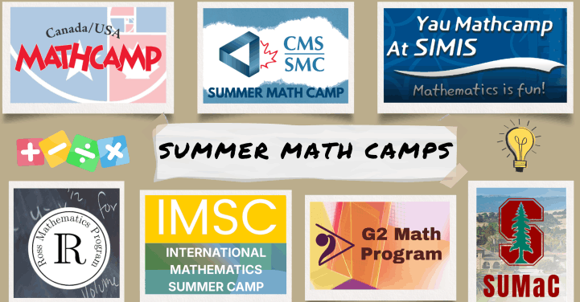
Summer 2025 · video series
This summer, six Math Together Canada students took part in some of the most selective and celebrated math programs around the world, including the Ross Mathematics Program, Stanford SUMaC, Canada's IMO Summer Training Camp, Yau Mathcamp, G2 Research Camp, Canada Math Camp, Canada/USA Mathcamp, and the International Math Summer Camp.
In these videos, they share what the classes felt like, the peers and mentors who shaped the experience, and the standout moments that made each camp unforgettable. Whether you're a math enthusiast or charting your own summer adventure, this is your insider's guide to the world of elite math camps.
April 10, 2025
Thanks to the help of MTC volunteers, CTMC online was a great success! With 20 students and 3 teams, each person collaborated to make the day meaningful. Throughout the rounds, team friendships were made while everyone discussed and helped each other with difficult math problems. Thank you to everyone who made the day so memorable and fun!
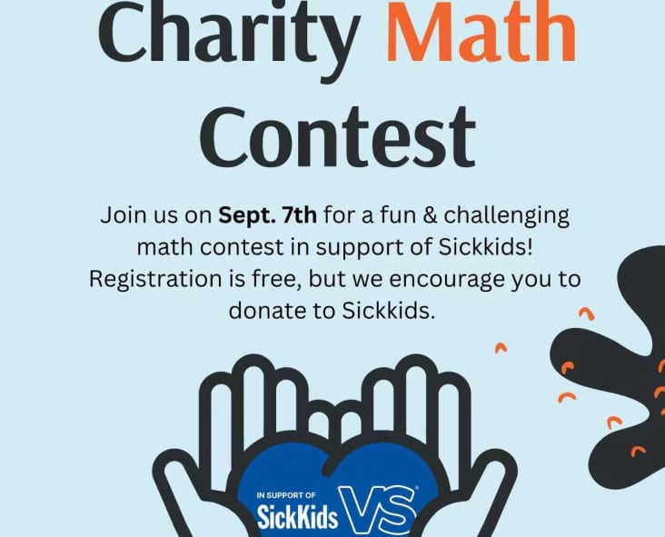
September 7, 2024
Get ready for a day filled with brain-teasing challenges and meaningful giving! On September 7th, 2024, we hosted a Fun & Challenging Math Contest — a day of excitement, learning, and community spirit, all in support of SickKids!
Registration for the contest was absolutely free, but we encouraged participants to donate to SickKids, a leading hospital that provides life-saving care to children. Thanks to your support, we raised an incredible $2,390 for SickKids! Every donation, big or small, makes a difference, and this amount goes directly to supporting the hospital's vital services and programs.
The contest itself was designed to challenge problem-solving skills with a mix of fun and difficult math problems. Whether a beginner or a seasoned math lover, everyone had the chance to compete, learn, and, most importantly, contribute to a great cause.
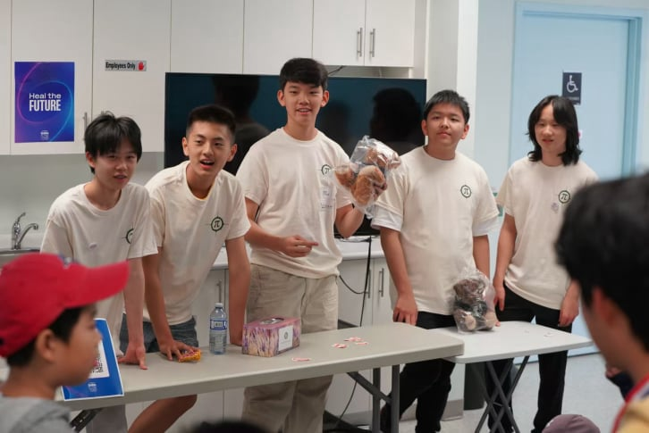
June 17, 2024
Math isn't just for classrooms or textbooks — it's a language that shapes the world around us, and it can be fun for everyone! That's exactly what the Math for Everyone Camp on June 17th, 2024, was all about. From young children to seasoned adults, the event brought together people of all ages for a day packed with exciting and interactive math activities.
The event kicked off with a warm welcome from Annie Cai, an enthusiastic math educator who made it clear from the start that math is more than just numbers and formulas — it's everywhere! With engaging activities designed to spark curiosity and creativity, participants of all ages quickly found themselves immersed in the world of math. Kids worked on fun hands-on activities, while adults tackled challenges like decoding secret messages and racing to solve riddles.
What made the workshop so special was its inclusivity. Whether you were a parent introducing your child to math in a fun and engaging way, a teenager exploring new challenges, or a senior reminiscing about math from years past, there was a place for everyone to dive in and enjoy the day. By the end of the event, the workshop proved one important thing: math is not just for a select few — it's for everyone.
by Kaylyn Zhang
Two years ago, I participated in the Canadian Team Mathematics Contest (CTMC), a fun and challenging math competition hosted by the University of Waterloo. I still remember how exciting it was to work together with the other five of my teammates. It was one of the first times I realized how enjoyable math could be, not just as a subject, but as something that unites people.
This year, I was able to return to CTMC as a volunteer. Watching the 20 participants from the sidelines enjoy their time together helped me almost relive that day, seeing everyone collaborate and make new friends within the normally competitive environment. My volunteering experience felt very meaningful, as I wasn't solving problems myself, rather helping others experience the same excitement and joy that I remember. In the future, I hope we are able to create more opportunities like this, where kids can come together to make friends and explore math in a fun and supportive way.
The happiness that comes from getting the right answer to a difficult problem does not nearly constitute a small fraction of the mathematical experience. It's really about working as a team, being able to support each other, and growing together.
June 18, 2026
Math Together Canada was proud to join TT Math's annual picnic — a day of games, food and new friendships beyond the classroom.
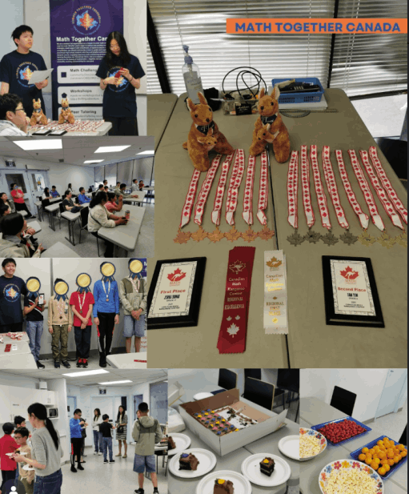
June 13, 2025
Congratulations to all the National and Regional Math Kangaroo 2025 winners, and thank you to everyone who participated!
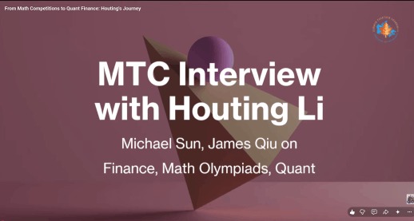
Video
Whether you're a high school student curious about math careers, or just wondering how numbers turn into real-world finance, this video is for you! Watch →
Video
What happens when passionate high school math enthusiasts sit down with real AI professionals? Watch →
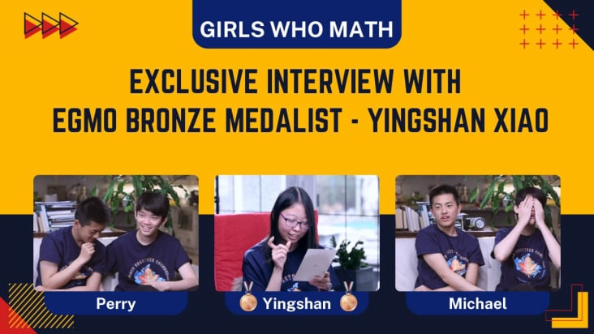
May 19, 2025 · Video
An exclusive conversation with a Canada EGMO medalist. Watch →
Math Together Canada is where numbers meet fun and friendship.
The people
President · Appleby College 2027
Michael is a passionate math enthusiast who excels in problem-solving as a CIMC Champion, IMMC Meritorious Award, COMC Bronze, USAJMO, CMO and APMO qualifier, with team successes in ARML, HMMT, BMT, and SMT.
Beyond math, he explores urban transportation — designing city maps with ML models — driven by curiosity and a love for deep learning. Committed to education and philanthropy, Michael tutors students and co-organizes charity math competitions, raising funds for SickKids and making a community impact.
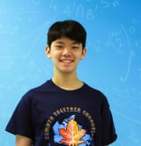
President · UTS 2027
Perry is a dedicated math enthusiast and avid competitor — highlights include CJMO Champion, APMO Silver, USAMO Bronze, and perfect scores on the CS/IMC.
Beyond contests, he excels in science, linguistics, and business competitions, driven by curiosity and a love for learning. At Math Together Canada, Perry hopes to share insights, inspire deeper engagement in math, and help create an inclusive, collaborative community.
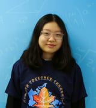
UTS 2028
Kaylyn is a passionate math student who has participated and won prizes in many contests, including the AMCs (2x Maryam Mirzakhani AMC10 certificate), CMWMC (2x 2nd place), CEMC contests (multiple plaques), MPFG, and HMMT. She has led multiple workshops and runs a math "pod" at school.
Outside of math, she is an ARCT piano player and has a third degree black belt in ITF Taekwondo. She hopes that through Math Together Canada, everyone feels included and empowered to pursue their interests.
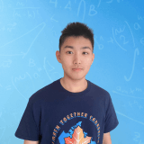
UCC 2028
A motivated math competitor, Prince has made the ARML tiebreakers and performed well in contests like the Euclid, COMC, AMC 10, and AIME. He also enjoys music, science, and DECA, all driven by an interest in learning and a willingness to explore new ideas.
At Math Together Canada, Prince aims to share his enthusiasm for math by sparking interest in others and laying a strong foundation for their future learning and growth.
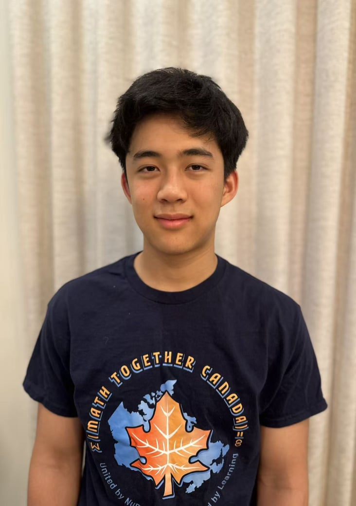
WTCS 2028
Maximilian is a curious student with a deep love for mathematics. He is a CJMO Gold Medalist and has qualified for the CMO, APMO, and AIME. He has also achieved team success at HMMT, ARML, IMMC, and SMO.
Beyond mathematics, Maximilian enjoys bouldering, boxing, swimming, and playing the guitar. He has organized charity concerts and performed in concerts, senior homes, and international competitions. Through Math Together, he hopes to inspire more students to discover the beauty of mathematics by making problem solving approachable, engaging, and rewarding.
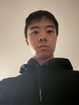
Harvard 2030
Han is a student from Vancouver, BC, with a strong passion for math. He has qualified for the CMO and APMO, and earned top scores in the COMC, AMC 12, AIME, and various CEMC contests.
Outside of math, Han plays varsity soccer and badminton, and enjoys learning about geography, history, politics, and current events — interests that come in handy for Reach for the Top. At Math Together, Han is excited to share his love for math, inspire younger students, and give back to the community that has shaped his journey.
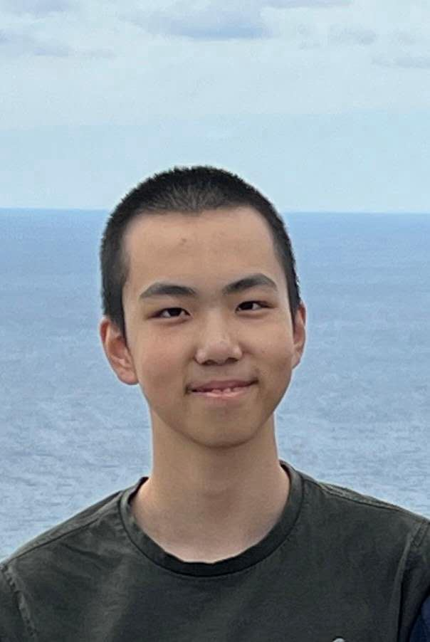
SDSS 2026
Chris is a dedicated student who finds great joy in exploring mathematics. He has qualified for USAJMO, CMO, and APMO, earning USAJMO Honor.
Additionally, he is a high-level Go player, demonstrating a strong interest in logic. Passionate about teaching, Chris has spent years tutoring and leading the Rising Stars Math Camp. At Math Together, he hopes to inspire students' curiosity and passion for mathematics, and help them discover its captivating beauty.
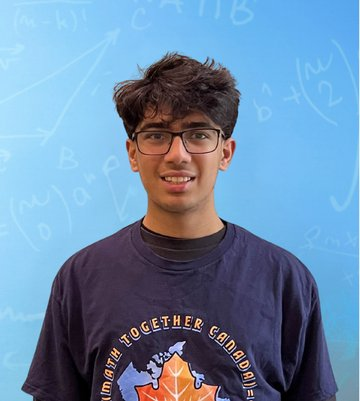
UTS 2027
Abhiraj is a dedicated student with a deep love for mathematics, thriving in both contest and enrichment settings. He has consistently qualified for AIME since grade 7 and earned a perfect score on CLMC. He brings strong communication and leadership skills from being an executive in his local DECA chapter; his other interests include chemistry and badminton.
At Math Together Canada, he aims to help students discover the beauty of mathematical reasoning, encourage collaborative approaches to challenging problems, and contribute to a supportive community where curiosity drives learning.
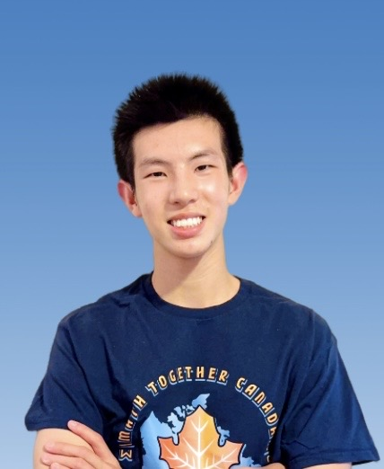
Hillfield 2028
Yixuan (Eason) Zhang is a highly motivated high school student with a strong academic record and a passion for science, mathematics, and research. He has earned multiple academic awards, including Highest Academic Standing and subject prizes in mathematics and science.
Beyond the classroom, Eason is active in STEM clubs, fencing, and community volunteering, with over 150 hours of service experience. He is committed to continuous learning, teamwork, and using his curiosity to contribute meaningfully to projects that make a positive impact.
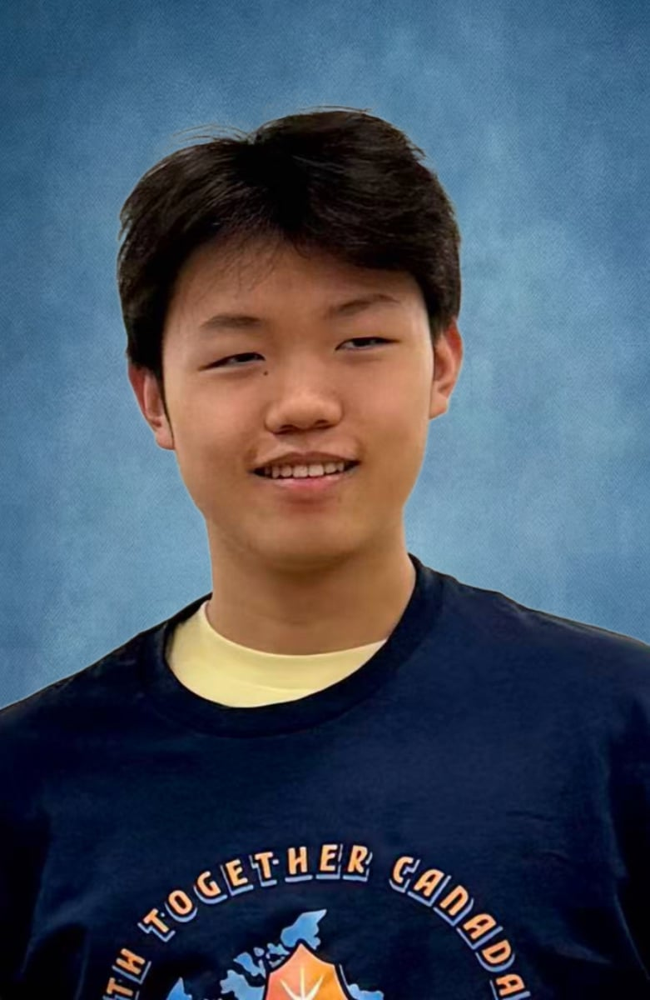
UCC 2027
Eric is a passionate student who loves business and debate, excelling in major competitions such as being a top 10 speaker for Harvard WSDC and reaching the national semifinals. He has honed his marketing and leadership skills as the Logistics Director for Asian Heritage activities at school and as the Executive of Marketing for the WePioneer Competition.
At Math Together Canada, he hopes to inspire students through strategic problem-solving, foster a dynamic learning environment, and bring communities together through a shared passion for mathematics.
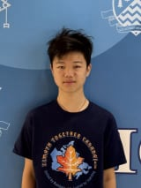
Crescent 2028
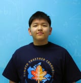
Stanford 2030
James is an enthusiastic student who loves math, business, and drama, excelling in AMC 10/12 (Distinguished Honor Roll), the Canadian Mathematical Olympiad (Performance with Honours), and USAMO Honorable Mention.
He has honed his communication and leadership skills through debate, DECA, and founding WePioneer, raising over $10k for SickKids via charity math contests. At Math Together Canada, he hopes to spark deeper interest in math, promote team problem-solving, and foster a welcoming community for everyone.
MIT 2029
2x IMO Silver Medal, 2x CMO Best Solution Award, 2x APMO Silver Medal.
Ming is passionate about inspiring the next generation of math enthusiasts by creating engaging problems, offering guidance, and sharing insights to help others grow their problem-solving skills. Through tangible action and advice, he aims to make math more accessible, enjoyable, and rewarding for the next generation.
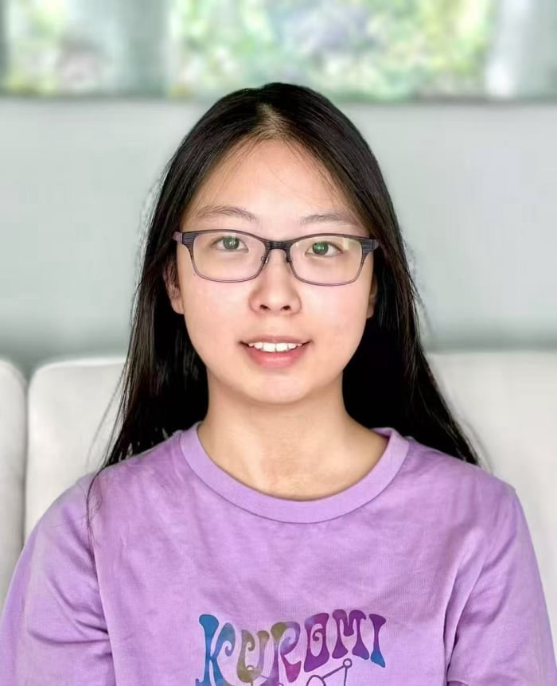
Caltech 2029
Shanna is passionate about math and participated in various math competitions throughout high school. She represented Team Canada at EGMO in 2023 and 2025, received Honourable Mention twice at MPFG, and Honours and Honourable Mention on the USAJMO.
Other than math, she's interested in writing, reading, and arts and crafts. With Math Together Canada, she hopes to contribute towards a math community for everyone and inspire younger students to pursue mathematics as well.
Harvard 2028
Emily is an undergraduate student at Harvard that is dedicated to sharing her love of math. She has earned an IMO bronze medal, EGMO silver medal, USAMO silver medal, and two honourable mentions on the CMO.
In her free time, Emily likes watching musicals and playing card games.
MIT PhD student
MIT (2020) in Mathematics, MIT PhD student in Computer Science, HMMT Director (2018–2019), USAMO qualifier, MPFG top 10 (the only one from Canada in MPFG history).
Purpose: to build a home for math lovers, generate interest and wonder in the math indifferent, and support the math adverse so that mathematics can be accessible to everyone.
Our supporters
Every lesson, camp, and contest we run is free. That is only possible because organizations choose to stand behind a room full of students who love math.
Our supporters cover the things enthusiasm cannot: contest registrations, camp materials, livestream tools, and the prizes for the charity events we host for SickKids. Sponsorship keeps the door open for every student who wants to walk through it.

 meet our supporters →
meet our supporters →
Get involved
Want to make a difference? Join us as a volunteer! We're always looking for passionate individuals who want to share their love for math.
Whether you're a math whiz or just someone who enjoys helping others, there's a place for you in our community. Together, we can inspire the next generation of mathletes!
Sign up now and let's make math a blast for everyone. Your contribution could change lives!
FAQ
We're a vibrant community dedicated to making math fun and engaging for everyone!
Simply click the Join Us button and fill out the form!
From math circles to competitions, we have it all!
Absolutely! We love volunteers who share our passion for math!
You can donate, volunteer, or spread the word!